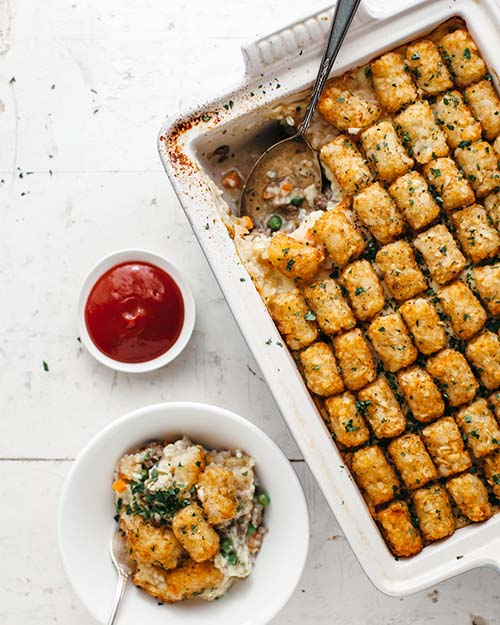

Tater Tot Hotdish

Description
Every New Year my wife and I have an ongoing tradition of making some kind of hotdish. Where did this tradition come from? I'm not really sure. I suppose our love for comforting food and the colder weather inspired us to reach for such a dish.
Anyway, this one is awesome.
Recipe taken from Molly Yeh
Ingredients
- 1/2 cup unsalted butter, divided
- 2 carrots, finely chopped
- 2 stalks of celery, finely chopped
- 1 large onion, dived and finely chopped
- kosher salt
- 3/4 cup all-purpose flour
- 3 cups whole milk
- 1 bouillon cube (chicken, veggie, or beef)
- black pepper
- 2 1/4 lbs ground beef
- 9 oz frozen peas or corn
- 1 1/2 lb tater tots
Steps
- Preheat the oven to 400º
- In a large pot, melt 6 tablespoons of butter over medium high heat. Add the carrots, celery, half of the onion, and a punch of salt. Cook, stirring until soft, about 12-15 minutes.
- Stir in the flour and cook for another minute.
- Stir in half of the milk and cook, stirring, until thickened.
- Stir in the remaining milk and cook, stirring, until very thick.
- Add the bouillon cube, a bunch of turns of black pepper, and a teaspoon of salt. Taste and adjust seasoning as desired. Pour into heat safe bowl and set aside.
- Wipe out your pot and set it back over medium high heat.
- Melt the remaining 2 tablespoons of butter and add the remaining half of the onion and a punch of salt. Cook, stirring, until soft, about 5-7 minutes.
- Add the ground beef and cook, breaking up with a wooden spoon, until browned. Season with salt and pepper.
- Stir in the peas or corn.
- Using a slotted spoon to dreain the juices, transfer half of the beef mixture to a 4-quart casserole dish and spread it out evenly. Layer on half of the soup mixture, and then the other half of the beef, and the other half of the soup.
- Cover with perfect rows and columns of tater tots. Sprinkle with another pinch of salt and pepper, top with cheese, if desired, and bake until the tots are golden brown and crispy on top, about 45 minutes.
- Let cool slightly, and enjoy!